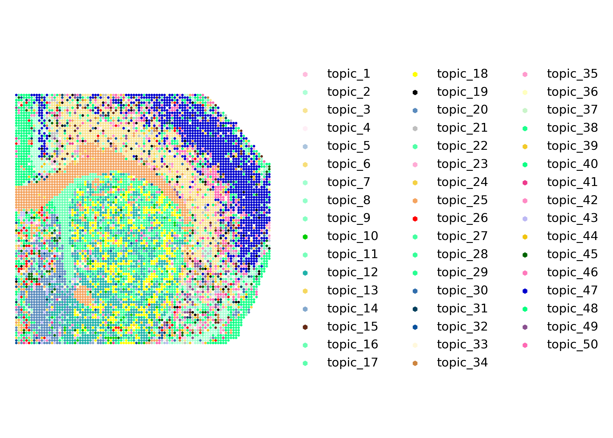
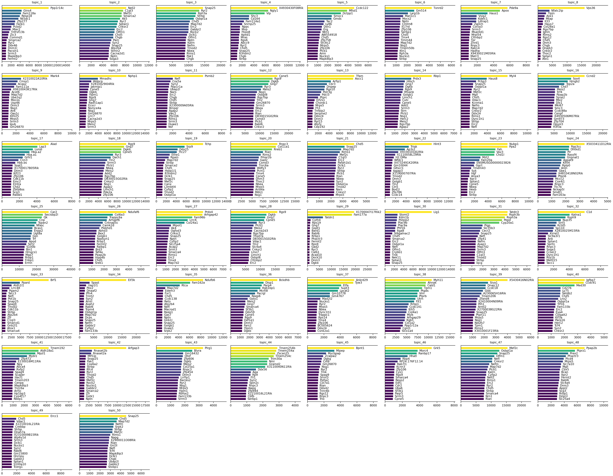
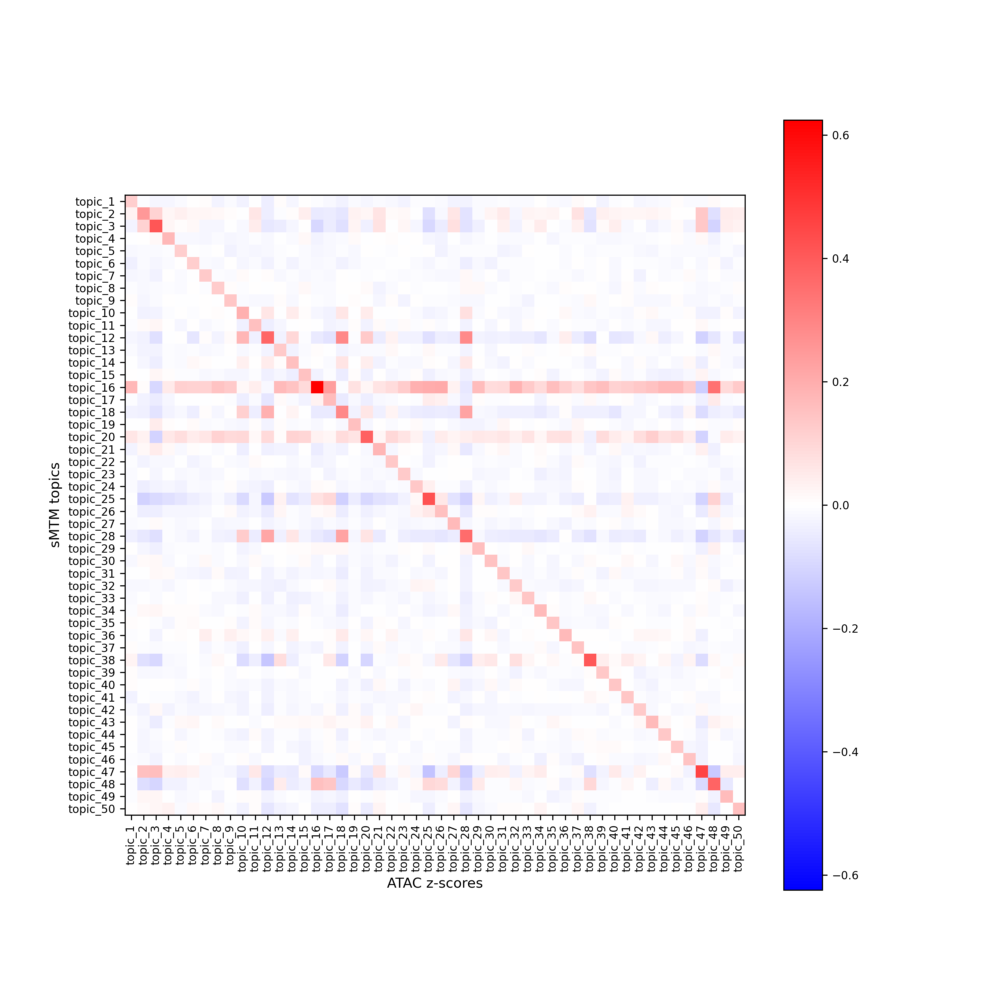
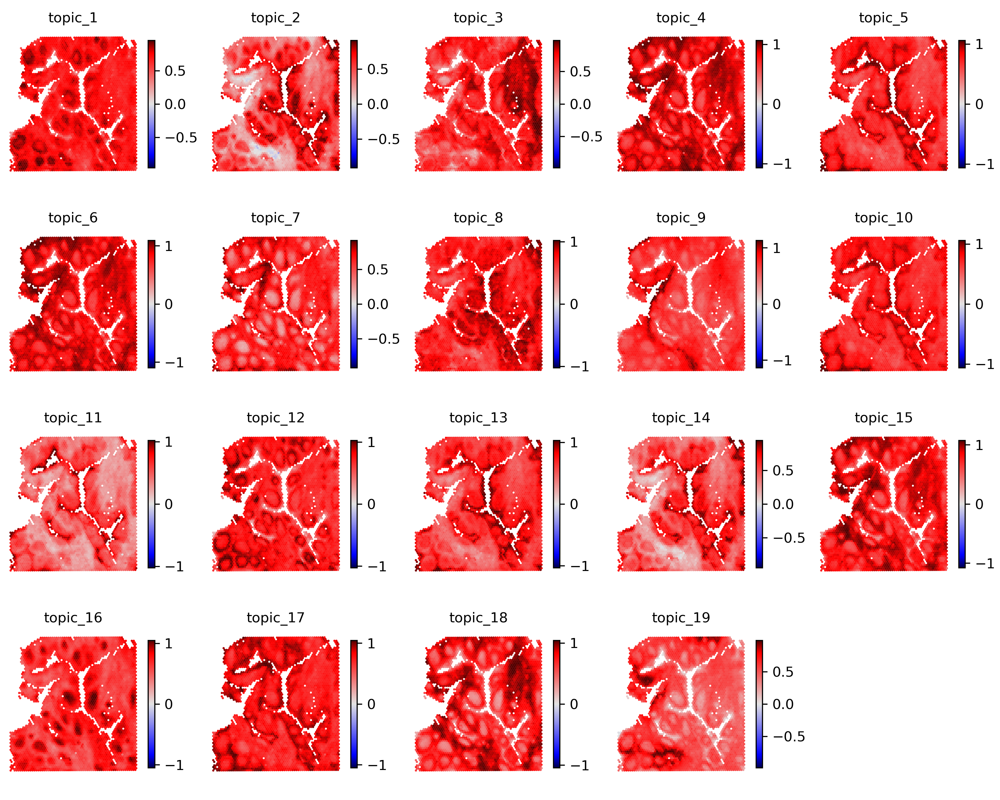
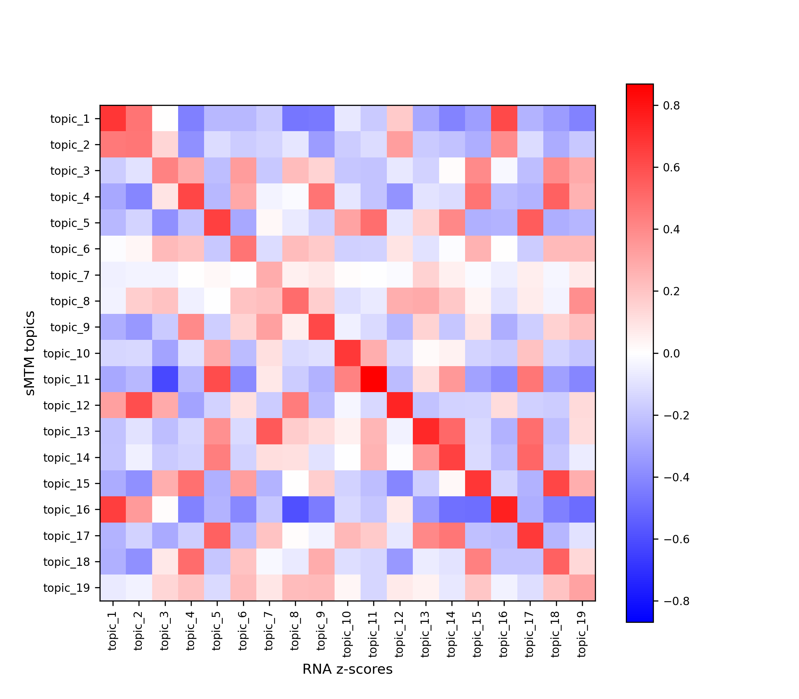
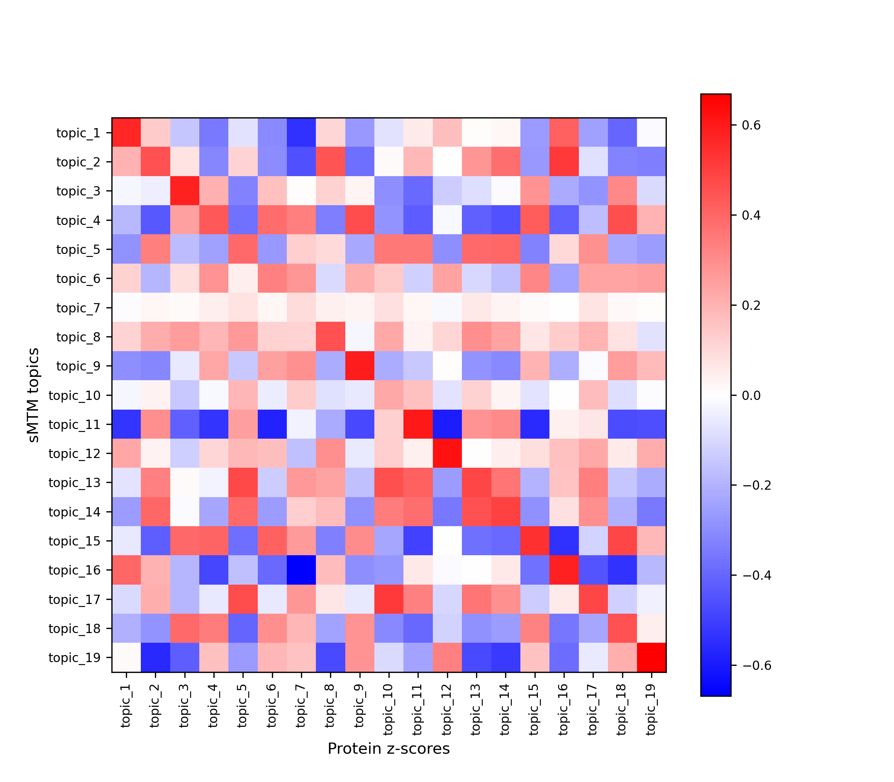

Tutorial 2: Human Tonsil (RNA + Protein Epitopes)
Source:vignettes/tutorial-2-human-tonsil.Rmd
tutorial-2-human-tonsil.RmdWelcome to the tutorial on using the mTopic package for
spatial multimodal topic modeling of human tonsils dataset. This dataset
offers the following key features:
- Multimodal measurements. Combines RNA and protein data, enabling integrated gene expression analysis and surface protein abundance analysis.
- Spatial context. Includes spatial coordinates for each cell or spot, allowing spatially informed analysis and visualization of tissue organization.
In this tutorial, we will walk through the following steps:
- Scaling and normalizing the data.
- Applying spatial multimodal topic modeling to identify distinct cell populations and explore their functional roles.
- Visualizing the results to gain insight into the spatial distribution of topics and cell types within the tissue.
Let’s begin by importing the required libraries for this analysis. The filtered training data is available at Zenodo.
library(mTopic)
library(Seurat)
dataset_name <- "Human_Tonsil_RNA_Protein_filtered.rds"
working_dir <- '~/projects/datasets/'
if(!file.exists(paste0(working_dir, dataset_name))){
download.file(
url = paste0("https://zenodo.org/records/15431784/files/", dataset_name, "?download=1"),
destfile = paste0(working_dir, dataset_name),
mode = "wb"
)
}Spatial Multimodal Topic Modeling
Load the prefiltered Seurat object with the human
tonsils dataset. The dataset comprises 4,194 spatial spots and two
modalities, rna (gene expression) and prot
(protein levels).
Before we train the spatial Multimodal Topic Model
(sMTM), it is essential to preprocess the data to improve
the model’s ability to identify meaningful patterns across
modalities.
To ensure comparability between RNA and protein data, we apply the following normalization and scaling steps:
-
TF-IDF transformation for RNA (
tfidf). Adjusts raw gene expression counts by balancing feature frequency and importance, emphasizing rare but informative genes. -
CLR normalization for protein (
clr). Corrects compositional biases by normalizing protein counts across cells using the Centered Log Ratio method. -
Scaling across modalities
(
scale_counts). Linearly scales counts to ensure all modalities contribute equally during topic modeling, preventing one from dominating the analysis.
ton <- tfidf(ton, mod = 'rna')
ton <- clr(ton, mod = 'prot')
ton <- scale_counts(ton)Now that the data is preprocessed, we can train the spatial
Multimodal Topic Model (sMTM). This model identifies
coordinated patterns across modalities while incorporating spatial
information. It captures co-expression of genes and proteins, revealing
distinct cell populations and their functional states.
Initialize the model. Create an instance of the
MTMclass, specifying the number of topics (n_topics) and other parameters. We use 19 topics for this tutorial for a compact but expressive model.Train the model. Fit the model using Variational Inference (
VI). This iterative process updates the model parameters to explain the observed data best. While training time depends on dataset size,sMTMis optimized for scalability.
smtm_model <- sMTM(ton, n_topics = 19, radius = 0.02, n_jobs = 100)
smtm_model <- VI(smtm_model, n_iter = 20)After training, export the learned parameters to the Seurat object
the using export_params function:
Topic proportions (
gammasaved totonsils@reductions$mTopic). Represent the distribution of topics within each cell or spot. These proportions help identify which topics are active in different tissue regions.Topic-feature distributions (
lambdasaved totonsils[[modality]]@meta.data). Indicate the importance of each feature (gene or protein) for each topic. These distributions help interpret the biological meaning of the topics.
ton <- export_params(smtm_model, ton)
#> Warning: No assay specified, setting assay as RNA by default.
ton
#> An object of class Seurat
#> 5028 features across 4194 samples within 2 assays
#> Active assay: prot (28 features, 0 variable features)
#> 3 layers present: counts, data, scale.data
#> 1 other assay present: rna
#> 2 dimensional reductions calculated: Spatial, mTopicThe export_params. function not only exports model
parameters but can also filter out insignificant topics based on their
overall contribution. Topic filtering: Set
filter_topics = TRUE to automatically remove topics with
low overall activity. The filter_threshold parameter
controls the minimum average topic proportion required to retain a
topic.
This helps remove spurious or noise-driven topics, simplifying downstream interpretation and visualization.
plot_filter_topics(smtm_model)
By preprocessing the data, training the sMTM model, and
exporting the learned parameters, we have set the stage for a
comprehensive analysis of cellular heterogeneity.
Visualizing Topic Proportions
Visualizing topic distribution across cells or spatial spots is key in interpreting topic modeling results. These proportions reflect the contribution of each topic to each cell. They can reveal spatially organized cell states, types, or biological processes.
To visualize topic proportions, use the plot_topics
function to generate scatter plots where each cell or spot is colored
according to the value of a selected topic. This reveals spatial
patterns and gradients that help interpret biological variation within
the tissue.
For example, if a topic captures a specific cell type, the plot will highlight regions enriched in that population.
plot_topics(ton, x = 'Spatial')
To visualize overall trends in topic distributions, use the
plot_dominant_topics function. This function assigns each
cell or spot to its most dominant topic — the one with the highest
proportion — and colors it accordingly.
The resulting plot provides a global overview of topic dominance across the tissue, helping you quickly identify regions enriched in specific topics. These regions may correspond to distinct cell types, tissue structures, or gradients of biological activity.
This visualization is handy for detecting the tissue’s spatial domains and functional zones.
palette <- list(
'topic_1' = '#F4A460', 'topic_2' = '#00CD00', 'topic_3' = '#00FF7F',
'topic_4' = '#FFC0CB', 'topic_5' = '#0000CD', 'topic_6' = '#000000',
'topic_7' = '#BEBEBE', 'topic_8' = '#FF6347', 'topic_9' = '#20B2AA',
'topic_10' = '#FF69B4', 'topic_11' = '#CDBA96', 'topic_12' = '#BEBEBE',
'topic_13' = '#EE3A8C', 'topic_14' = '#006400', 'topic_15' = '#FFFF00',
'topic_16' = '#CD853F', 'topic_17' = '#FFF8DC', 'topic_18' = '#EE82EE',
'topic_19' = '#8B2252'
)
plot_dominant_topics(ton, x = 'Spatial', marker = 'h', s = 30, palette = palette)
Alternatively, you can explore topic proportions in more detail using
pie chart scatter plots with plot_scatter_pie. This
function visualizes the complete topic composition of each cell or spot
as a pie chart.
plot_scatter_pie(ton, x = 'Spatial', radius = 0.0073, palette = palette)
Rendering may take time, especially for large datasets. To improve
performance and focus on a specific region, you can limit the number of
visualized spots using the xrange and yrange
parameters (default: c(0, 1)), which define the fraction of
the spatial extent to display.
plot_scatter_pie(ton, x = 'Spatial', radius = 0.0073, palette = palette, xrange = c(0.3, 0.6), yrange = c(0.35, 0.65))
Visualizing Feature Signatures
To interpret the results of the sMTM model, it is
important to examine the feature signatures associated with each topic.
Identifying the most relevant features — genes or proteins — for each
topic provides insight into the biological identity and function of the
inferred cell populations or processes.
Use the plot_signatures function to visualize the top
features per topic. This function generates a set of plots, each showing
the most significant features ranked by their importance for a given
topic.
These visualizations help reveal which molecular markers distinguish topics, aiding in biological interpretation and annotation of the results.
plot_signatures(ton, mod = 'rna', n_top = 20)
plot_signatures(ton, mod = 'prot', n_top = 10, figsize = c(10, 8))
To better understand the spatial relevance of topic signatures and validate their biological specificity, you can visualize feature z-scores. A z-score indicates how much a feature’s expression in a given cell deviates from the mean, normalized by standard deviation. This highlights significantly up- or downregulated features in specific regions or cell populations.
Use zscores to compute modality-specific z-scores, and
plot_zscores to visualize their spatial distribution across
the tissue. These plots help identify spatially localized or diffuse
topics, revealing potential functional niches or gradients.
In the example below, we compute z-scores for the top 20 genes and top 3 proteins per topic to explore their spatial expression patterns.
ton <- zscores(ton, mod = 'rna', n_top = 10)
plot_zscores(ton, mod = 'rna', x = 'Spatial')
ton <- zscores(ton, mod = 'prot', n_top = 10)
plot_zscores(ton, mod = 'prot', x = 'Spatial')
It is helpful to visualize the correlation between z-scores and topic proportions across cells to assess how well feature signatures align with inferred topic distributions.
Use the plot_corr_heatmap function to generate a heatmap
of correlations between z-scores (for top features) and topic
proportions. Each cell in the heatmap represents the correlation
strength for a feature-topic pair.
High values along the diagonal indicate that the selected features strongly correspond to their respective topics. This confirms that the topic model has captured biologically meaningful patterns.
plot_corr_heatmap(data1=ton@reductions$mTopic@cell.embeddings, label1 = 'sMTM topics',
data2=ton[['rna']]@misc$zscores, label2 = 'RNA z-scores')
plot_corr_heatmap(data1=ton@reductions$mTopic@cell.embeddings, label1 = 'sMTM topics',
data2=ton[['prot']]@misc$zscores, label2 = 'Protein z-scores')
This concludes the example application of mTopic for
modeling spatial multimodal single-cell data, demonstrated using the
human tonsil dataset. We have walked through preprocessing, topic
modeling, and result interpretation, highlighting how
mTopic enables integrated analysis across modalities with
spatial context.